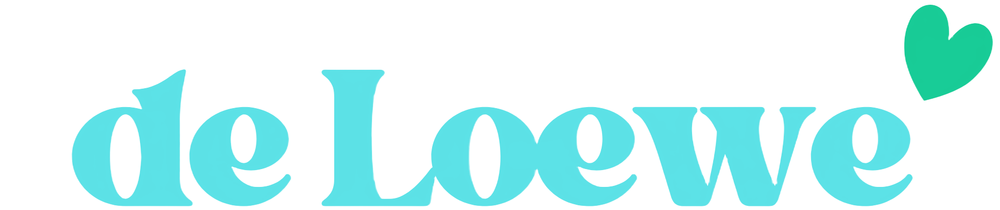

Maintenance matérielle prévue le 17 novembre de 17h à 22h : des interruptions de service sont à prévoir.

Accueil
HomeCloud
Se connecter
Services
HomeCloud
Accédez à votre espace de stockage personnel : fichiers, dossiers, musique.
Aller sur HomeCloud